“Art of Science” competition
Justin Pearson
2015-02-19
Competition organized through the Center for Science and Engineering Partnerships at the University of California at Santa Barbara.
Summary
We stream movies, send pictures to friends, and video-chat with distant loved ones, all digitally, and all without a second thought. Empowering this revolution behind the scenes is Information Theory, which provides a mathematical framework to quantify, compress, and transmit information.
This picture illustrates an important theorem in Information Theory: the Asymptotic Equipartition Property. It formalizes and generalizes the intuitive notion that if you flip a fair coin many times, you would expect about 50% heads. In the image, each square represents a string of coinflips (with 0=tails and 1=heads), with smaller squares representing longer strings of flips. Like a family tree, each square recursively generates 4 squares below it by appending one of 4 suffixes: 00, 01, 10, or 11. Each square is black, but is made transparent depending on how close to “50% heads” its corresponding string of coinflips is. We see that the vast majority of the tiny squares at the bottom are nearly 50% heads and hence transparent, allowing the underlying Swiss pasture scene to show through.
Final picture
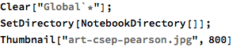
How it’s made
Basic idea
Each square represents a bitstring. Every ‘child’ square inherits the parent’s bitstring with +00, +01, +10, or +11 added.

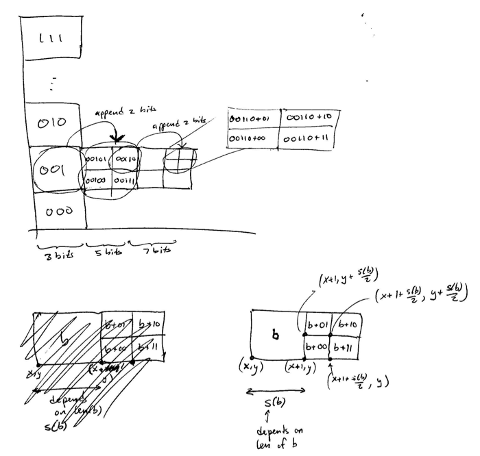
Define object: ‘square’
We represent a bitstring as a ‘square’ object square[ bitstring, position, color ].
This defines a bunch of functions on a ‘square’ object:

Example square:
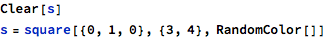


Child squares.
Each bitstring can generate 4 ‘child’ bitstrings by append 00, 01, 10, or 11. Each of these bitstrings’ squares has a position based on the parent’s.
Here is a square for the bitstring “000” at position {0,0} with color Red:
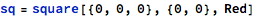

The possible suffixes:
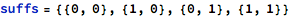
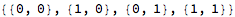
Append each suffix to form the child squares:
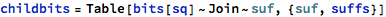
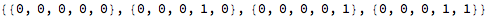
Child squares’ positions are based on their parent position. They’re shifted over horizontally and then shifted around based on their suffix.
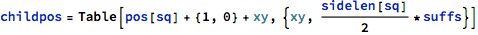

For now, child colors are just lighter versions of the parent square:
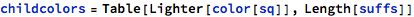
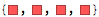
Create the children:
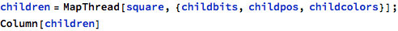
The ‘graphics’ function we defined for squares is listable, so can be called on a list of children. Here is what the children look like:


Wrap into a function.

Example use:

| 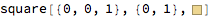 |
| 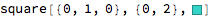 |
| 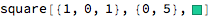 |
| 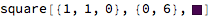 |


Set opacity as function of “how close is 1/0 fraction to 50%?”
Now we decide how opaque to make a square, as a function of its fraction of 1’s and 0’s. The idea is that an equal proportion of 1’s and 0’s should result in an clear square (Opacity 0), whereas a bitstring with all 1’s or all 0’s should be totally opaque (Opacity 1). This amounts to choosing a function that takes the bitstring, computes the fraction of 1’s, and is 0 at 0.5 (50%) and 1 at 0 (0%) and 1 (100%).
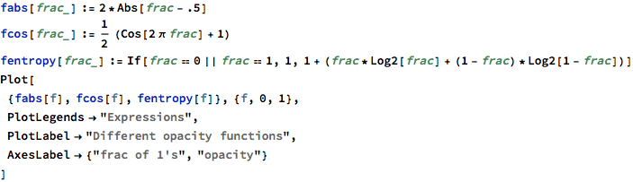

You can see that although the functions agree at 0, 0.5, and 1.0, they vary a little in their gray-levels in between:
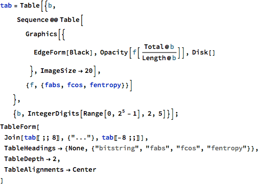
| bitstring | fabs | fcos | fentropy |
| {0,0,0,0,0} | |||
| {0,0,0,0,1} | |||
| {0,0,0,1,0} | |||
| {0,0,0,1,1} | |||
| {0,0,1,0,0} | |||
| {0,0,1,0,1} | |||
| {0,0,1,1,0} | |||
| {0,0,1,1,1} | |||
| ... | |||
| {1,1,0,0,0} | |||
| {1,1,0,0,1} | |||
| {1,1,0,1,0} | |||
| {1,1,0,1,1} | |||
| {1,1,1,0,0} | |||
| {1,1,1,0,1} | |||
| {1,1,1,1,0} | |||
| {1,1,1,1,1} |
Fabs is a little darker, which makes the final image look more dramatic. But Shannon’s entropy is more thematically fitting.
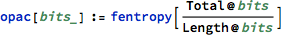
Override the graphics function to use opacity instead of the parent’s color:


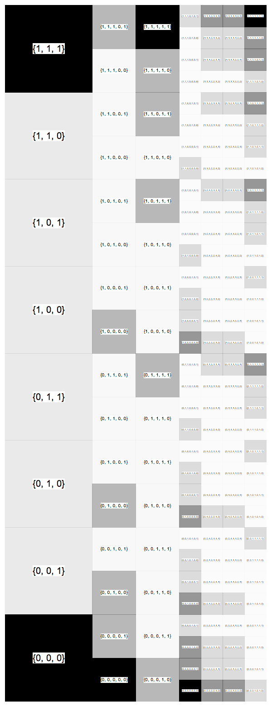
Use as image mask
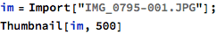

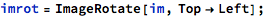
Turn off the text of the bitstring:
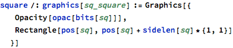
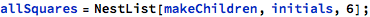
There are a lot of squares. Each square turns into 4 squares in the next “generation”, starting with 8 squares and lasting 7 generations.
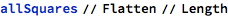
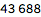
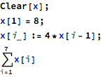


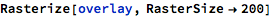
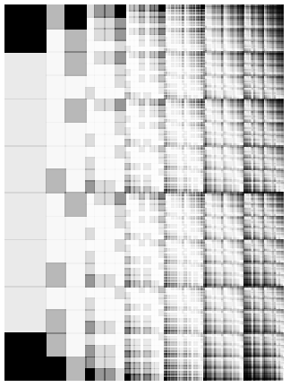

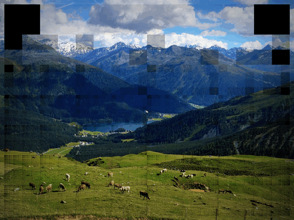
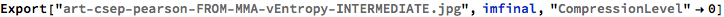

(Now add the numbers manually (I did it in Mac’s Preview.))